Merekam macro pertama
Macro adalah rangkaian langkah yang direkam lalu dijalankan ulang dengan satu klik. Excel menulis kode VBA-nya sendiri selama perekaman.
Langkah praktik
- Aktifkan tab Developer: File > Options > Customize Ribbon > centang Developer.
- Developer > Record Macro. Beri nama tanpa spasi, misalnya FormatTabel, dan pilih tombol pintas bila perlu.
- Lakukan langkah yang ingin direkam, misalnya menebalkan judul dan memberi warna.
- Klik Stop Recording.
- Jalankan lagi lewat Developer > Macros > Run, atau lewat tombol pintas.
- Simpan file sebagai Excel Macro-Enabled Workbook (.xlsm).
Tips
Rekam hanya langkah yang perlu. Gerakan yang salah ikut terekam.
Aktifkan Use Relative References bila macro harus berlaku di sel mana pun, bukan hanya sel yang direkam.
Tangkapan layar praktik
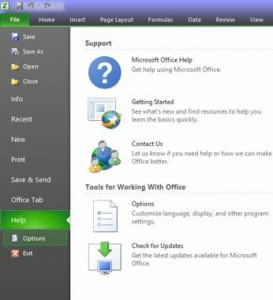
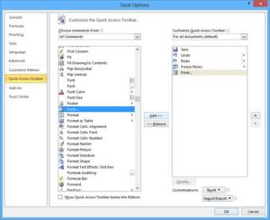
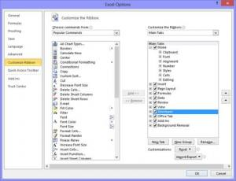
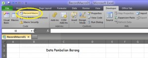
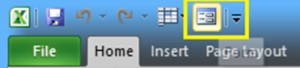
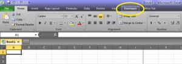
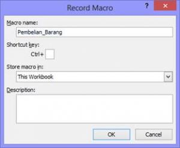
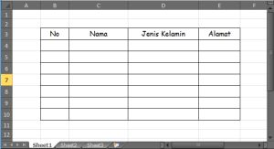
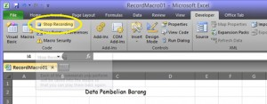
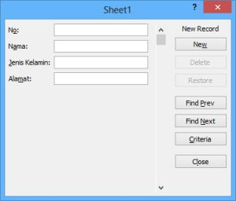
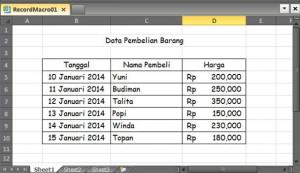
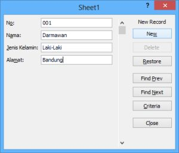
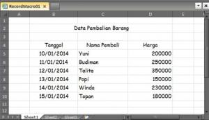
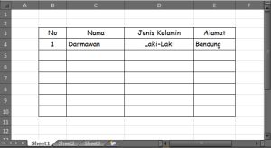
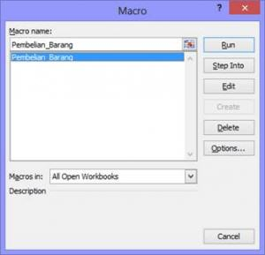
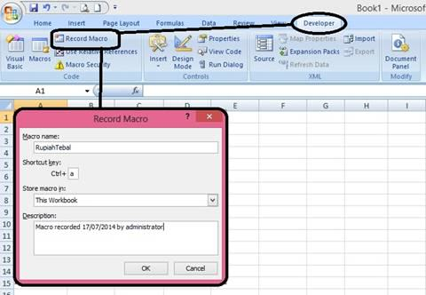
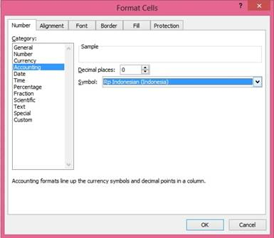
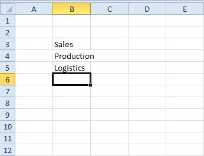
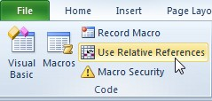
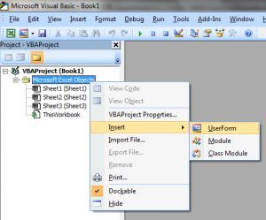
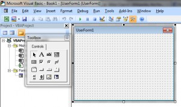
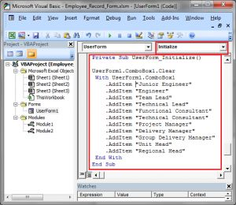
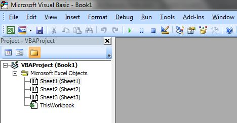
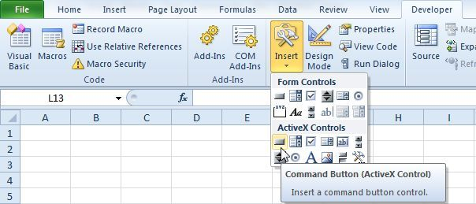
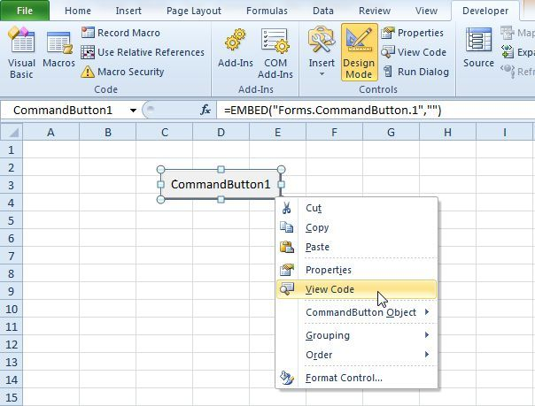
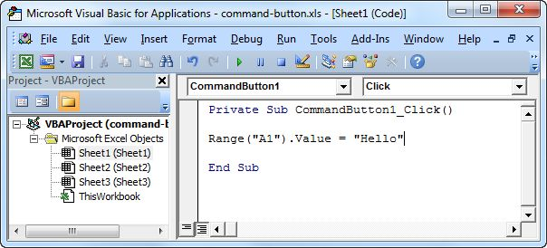
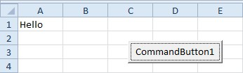
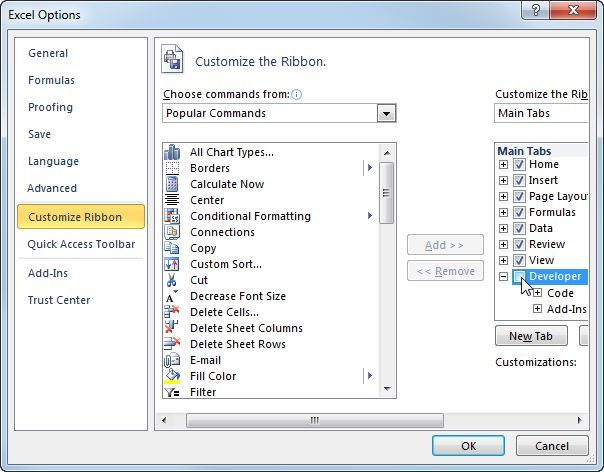
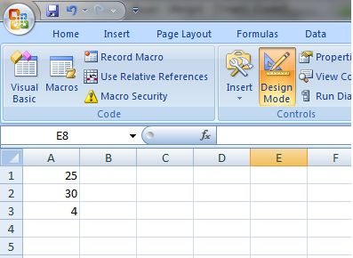
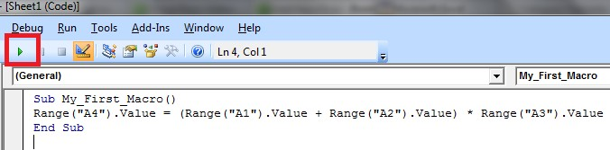
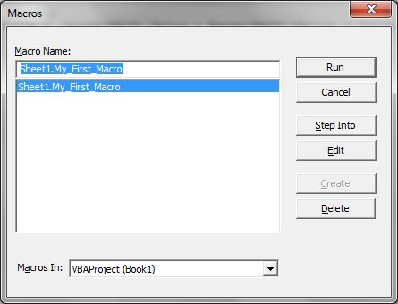
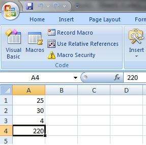
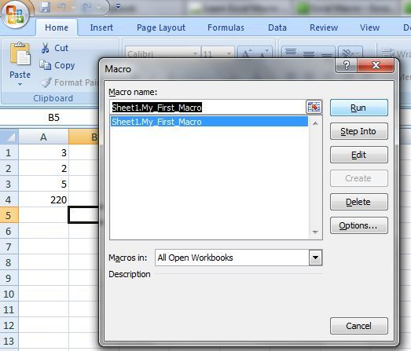
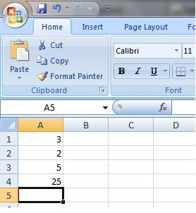
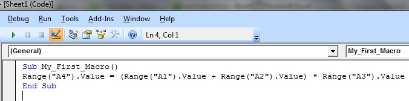
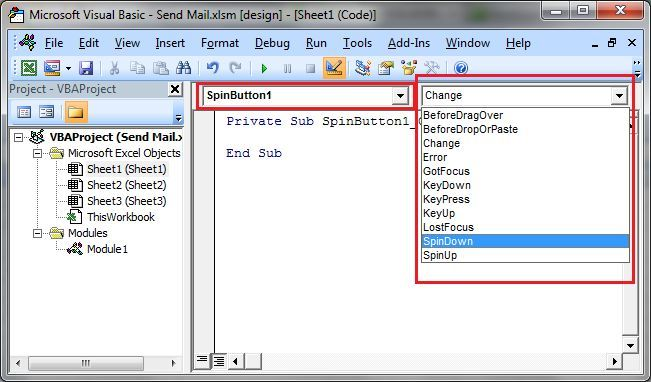
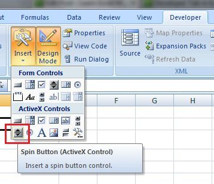